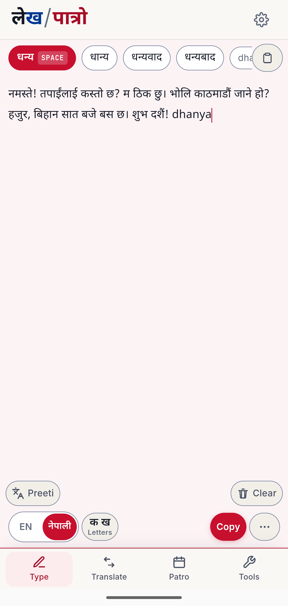
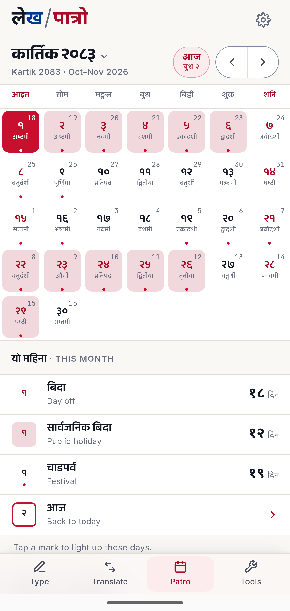
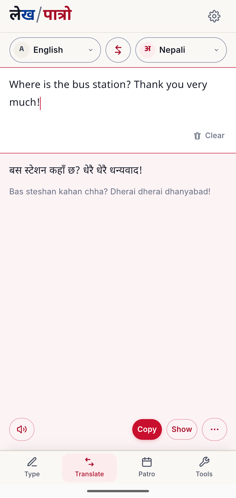
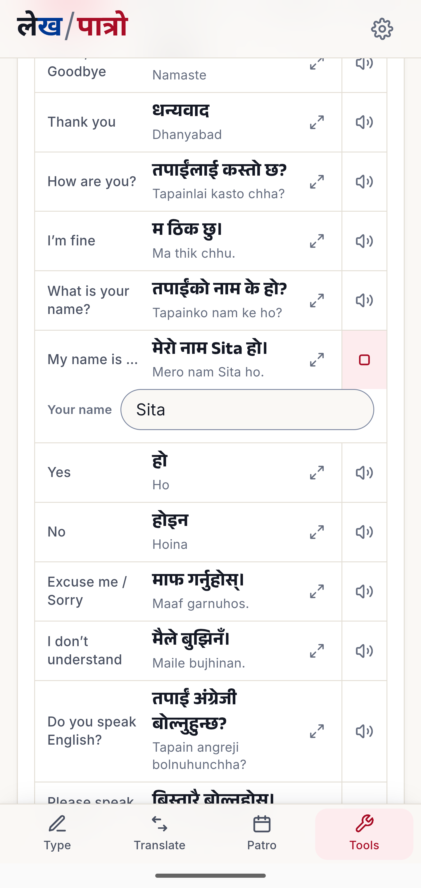
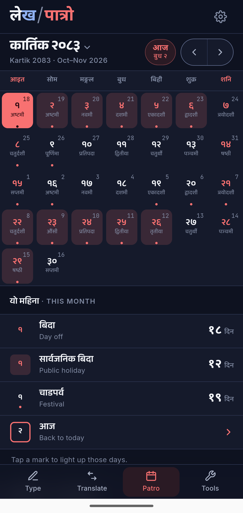
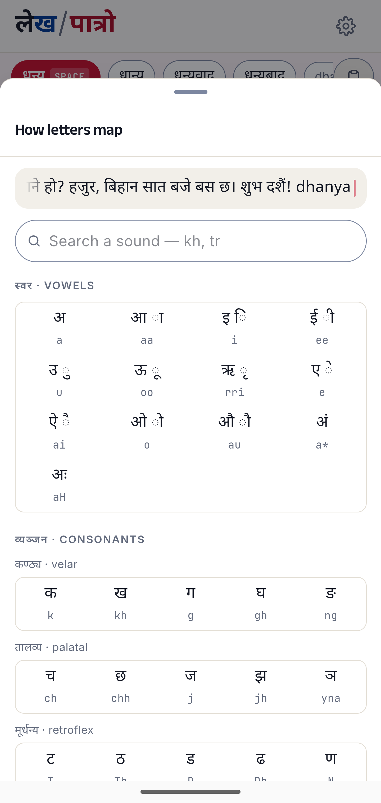

नेपाली लेख्नुहोस्
Type Nepali the way you text
9:41

बिक्रम सम्बत पात्रो
Every tithi, every
holiday
9:41

अनुवाद, अनि आवाज
Translate it. Hear it.
9:41

यात्रीका लागि
Say it in Nepali, out loud
9:41

गृह स्क्रिन विजेट
Your patro on the home screen
Five sizes, from today's date to the whole month
दशैंदेखि तिहारसम्म
Dashain to Tihar, day or night
9:41

क ख ग
Every letter, one look away
9:41

तपाईंको फोन, तपाईंको कुरा
No ads.
No accounts.
No tracking.
Runs on your phone
Typing, text recognition and the calendar
Photos stay private
Images never leave your phone
Free and open source
No in-app purchases, ever
No sign-up
Open it and start writing
ले
ख
/
पात्रो